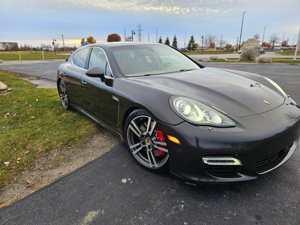

1st gen (2006-2015)
This is an ACTUAL Panamera for sale at the time of making this
In 2013 the Panamera got a facelift. For the sake of humanity we'll focus on the preface lift.
- The GTS,4S & S submodel came with 434-400hp
- The Turbo & Turbo S submodel came with over 500hp!
- These came with the legendary PDK transmission, which is STILL in use today
Link to ad: Panamera for sale